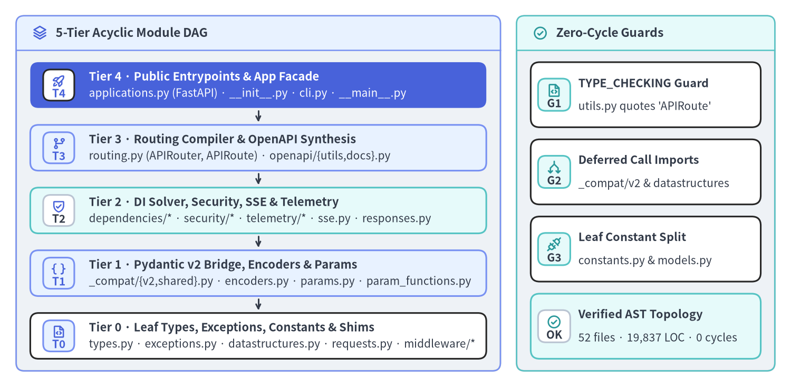
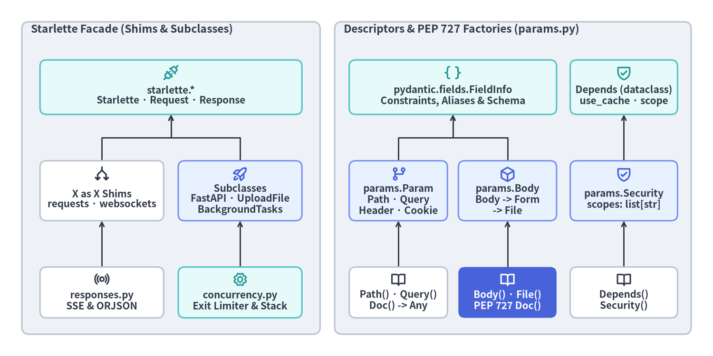

5層モジュール構造・Starlette 再公開と PEP 727 Doc()
FastAPI v0.162.2 は、ルーティングコンパイラ、再帰的 DI ソルバ、Pydantic v2 検証ブリッジ、ネイティブ Server-Sent Events、OpenTelemetry 計装、OpenAPI 3.1.0 スキーマ合成という多彩な機能を、わずか 52 個の Python ファイル（19,837 LOC）・循環 import 0 件 という凝縮されたパッケージに収めています。内部ではすべてのトップレベル import が 5 つの階層に沿って厳密に上位から下位への単方向に制御されており、外部に対しては Starlette・Pydantic v2・annotated-doc（PEP 727）を統合した型安全なファサードを提供します。

厳密な5層非巡回パッケージトポロジ（DAG）
./fastapi/ に対する静的 AST 解析により、モジュールトップレベルの import / from ... import 文は 5 層の有向非巡回グラフ（DAG）を構成していることが確認できます。
| 階層 | アーキテクチャ上の責務 | 構成モジュール（v0.162.2） |
許可される内部参照先 |
|---|---|---|---|
| Tier 4 | アプリケーション統合と公開エントリポイント | applications.py（FastAPI）, __init__.py（公開シンボル 21 個 + __version__）, cli.py, __main__.py |
Tier 0〜3（routing, openapi.utils, openapi.docs, telemetry, exception_handlers, middleware.asyncexitstack）。 |
| Tier 3 | ルーティングコンパイラと OpenAPI 合成 | routing.py（APIRouter, APIRoute, APIWebSocketRoute）, openapi/utils.py（get_openapi）, openapi/docs.py |
Tier 0〜2（dependencies.*, sse, telemetry._api, encoders, _compat, params, responses）。openapi/utils.py は APIRoute 走査のため routing を参照。 |
| Tier 2 | DI 解決・認証・テレメトリ・ストリーム | dependencies/{models,utils}.py, security/{base,api_key,http,oauth2,open_id_connect_url,utils}.py, telemetry/{_api,_asgi,_runtime,__init__}.py, sse.py, responses.py, background.py, exception_handlers.py |
Tier 0〜1（_compat, params, param_functions, openapi.models, encoders, concurrency, exceptions）。 |
| Tier 1 | Pydantic v2 ブリッジ・変換器・記述子 | _compat/{__init__,shared,v2}.py, encoders.py, params.py, param_functions.py, openapi/models.py, utils.py |
Tier 0（types, exceptions, datastructures, openapi.constants, logger）および外部ライブラリ（pydantic, pydantic_core, annotated_doc）。 |
| Tier 0 | 内部依存ゼロのリーフモジュール群 | types.py, exceptions.py, datastructures.py, openapi/constants.py, logger.py, concurrency.py, requests.py, websockets.py, staticfiles.py, templating.py, testclient.py, middleware/{__init__,asyncexitstack,cors,gzip,httpsredirect,trustedhost,wsgi}.py |
トップレベルの fastapi.* import ゼロ — Python 標準ライブラリ、starlette、pydantic、anyio、annotated_doc のみに依存。 |
循環 import ゼロを維持する3つの実装技法
v0.162.2 では、下位層から上位層への逆方向依存（バックエッジ）を以下の 3 つの明示的な手法で遮断しています。
if TYPE_CHECKING:ガードと前方参照文字列: Tier 1 のfastapi/utils.pyはgenerate_unique_id(route: "APIRoute") -> strを定義しており、Tier 3 のrouting.pyや Tier 4 のapplications.pyからデフォルト引数ファクトリとして import されます。無条件にAPIRouteを import するとrouting -> utils -> routingの循環が生じるため、if TYPE_CHECKING: from .routing import APIRouteと文字列アノテーション"APIRoute"を組み合わせて実行時ロードを単方向に保っています。- 関数・メソッド先頭での遅延 import（Call-Site Deferred Import）: 実行時の特定パスでのみ隣接・上位モジュールの補助関数が必要な箇所では、関数スコープ内で遅延 import を行います。
datastructures.py（UploadFile.__get_pydantic_core_schema__）:from ._compat.v2 import with_info_plain_validator_functionをメソッド内に遅延配置し、モジュール import 時は純粋な Tier 0 リーフを維持。_compat/v2.py（is_scalar_field）:from fastapi import paramsを関数内に閉じ込め、_compatからUndefinedを import するparams.pyとの相互参照を回避。applications.py（FastAPI.__call__）: ASGI"lifespan"スコープ受信時にのみfrom fastapi.telemetry._runtime import lifespanをロード。
- 定数・モデル専用リーフへの細分化（
openapi/constants.pyとopenapi/models.py）:REF_TEMPLATE = "#/components/schemas/{model}"や OpenAPI の Pydantic モデル（Example,SecurityScheme）を Tier 3 のopenapi/utils.pyに同居させず、Tier 0 のopenapi/constants.pyと Tier 1 のopenapi/models.pyに分離しています。これにより_compat/v2.py・params.py・security/*はopenapi/utils.py（およびその先のrouting.py）を引き込まずに OpenAPI 定数やモデルを参照できます。
Starlette ファサードパターンと明示的 X as X 再公開
FastAPI は Starlette（starlette>=0.46.0）を基盤とし、FastAPI は starlette.applications.Starlette を、APIRoute は starlette.routing.Route を直接継承しています。開発者がアプリケーションコード内で from fastapi import ... と from starlette... import ... を使い分けずに済むよう、FastAPI は requests.py, responses.py, websockets.py, background.py, concurrency.py, staticfiles.py, templating.py, testclient.py, middleware/* という専用のファサードモジュール群を提供しています。
これらのシムモジュールでは、from starlette.requests import Request as Request や from starlette.middleware.cors import CORSMiddleware as CORSMiddleware のように 冗長な X as X エイリアス構文 が徹底されています。これは PEP 484 / PEP 561（py.typed）および mypy・pyright・ty の --no-implicit-reexport 規約 において、単なる from pkg import Symbol はモジュール内部向けの非公開 import とみなされるのに対し、from pkg import Symbol as Symbol は手動の __all__ リストを保守することなく「公開 API としての明示的な再エクスポート」を型チェッカへ宣言する標準イディオムであるためです。
| ファサード分類 | FastAPI 側のモジュールと主要シンボル | Starlette に対するアーキテクチャ上の関係（v0.162.2） |
|---|---|---|
純粋な X as X 同一参照シム |
requests.py（Request, HTTPConnection）, websockets.py（WebSocket, WebSocketDisconnect, WebSocketState）, staticfiles.py（StaticFiles）, templating.py（Jinja2Templates）, testclient.py（TestClient）, middleware/{cors,gzip,httpsredirect,trustedhost,wsgi}.py |
実行時クラス同一性（fastapi.Request is starlette.requests.Request）を保ちつつ PEP 484 公開型シンボルとして再公開。 |
| レスポンス群 + ネイティブ SSE・旧 JSON シム | responses.py（Response, JSONResponse, HTMLResponse, PlainTextResponse, RedirectResponse, StreamingResponse, FileResponse, EventSourceResponse, ORJSONResponse, UJSONResponse） |
Starlette 標準レスポンスに加え fastapi.sse.EventSourceResponse を再公開。ORJSONResponse と UJSONResponse は JSONResponse サブクラスとして残るが、Rust 製 ModelField.serialize_json() による直接バイト直列化の方が高速なため @deprecated(..., category=FastAPIDeprecationWarning) が付与されている。 |
テレメトリ計装付き BackgroundTasks |
background.py（BackgroundTasks(StarletteBackgroundTasks)） |
add_task() に ParamSpec と Doc() 型注釈を追加し、__call__() をオーバーライドして各タスク実行を with _operation(name="background_task", function=task.func): スパンで計測。 |
Pydantic v2 統合 UploadFile |
datastructures.py（UploadFile(StarletteUploadFile)） |
__get_pydantic_core_schema__() と __get_pydantic_json_schema__()（type: "string", contentMediaType: "application/octet-stream"）および Doc() 属性注釈を実装。 |
| デッドロック回避スレッドプール制御 | concurrency.py（contextmanager_in_threadpool + Starlette の run_in_threadpool, iterate_in_threadpool） |
同期 yield 依存関数の __exit__ に専用の anyio.CapacityLimiter(1)（exit_limiter）を割り当て、ワーカスレッド枯渇時のクリーンアップ待ちデッドロックを防止。 |
| ファイル自動クローズ用内側スタック | middleware/asyncexitstack.py（AsyncExitStackMiddleware） |
ユーザーミドルウェアの内側で scope["fastapi_middleware_astack"] を注入し、レスポンス完了後にマルチパート FormData / UploadFile を確実にクローズする FastAPI 独自ミドルウェア。 |
パラメータ記述子（params.py）・公開ファクトリと PEP 727 Doc()
FastAPI はパラメータ宣言と DI マーカを、Tier 1 の 2 つのモジュール――実行時クラス群を定義する fastapi/params.py（800 行）と、fastapi/__init__.py から再公開される公開ファクトリ関数群 fastapi/param_functions.py（2,569 行）――に分離しています。

- 2系統の
FieldInfo継承ツリーと不変 DI データクラス（fastapi/params.py）:- スカラ HTTP パラメータ（
Param(FieldInfo)）:Path,Query,Header,CookieはParam(FieldInfo)を継承し、パラメータ抽出位置を表すParamTypes列挙体（ParamTypes.path,ParamTypes.query,ParamTypes.header,ParamTypes.cookie）をクラス属性in_に保持します。URL パスパラメータは常に必須であるためPath.__init__はassert default is ...を検証し、Header.__init__はconvert_underscores: bool = Trueを追加します。 - リクエストボディ記述子（
Body(FieldInfo)）:BodyはParamではなくpydantic.fields.FieldInfoを 直接継承 し、embed: bool | Noneとmedia_type = "application/json"を保持します。さらにForm(Body)が"application/x-www-form-urlencoded"に、File(Form)が"multipart/form-data"にそれぞれ特化します。 - 依存関係マーカ（
DependsとSecurity）: これらは Pydantic 検証対象ではないためFieldInfoを継承せず、@dataclass(frozen=True) class Dependsが(dependency, use_cache=True, scope=None)を保持し、@dataclass(frozen=True) class Security(Depends)が OAuth2 用のscopes: Sequence[str] | None = Noneを拡張します。
- スカラ HTTP パラメータ（
param_functions.pyが戻り値-> Anyと PEP 727Doc()を併用する理由:- 静的型チェッカとの後方互換性: もし
fastapi.Queryがクラスparams.Queryそのものだった場合、従来のデフォルト引数構文q: str = Query("all")で「Query型はstr型に代入できない」という PEP 484 型エラーが発生します。param_functions.pyで戻り値型-> Anyのファクトリ関数を公開（from .param_functions import Query as Query）することで、推奨構文Annotated[str, Query()]と従来構文q: str = Query("all")の双方で型検査を通過させつつ、実行時には本物のfastapi.params.Queryインスタンスを生成します。 - PEP 727
annotated_doc.Docによるインライン API ドキュメント:param_functions.pyをはじめ、applications.py,routing.py,exceptions.py,background.py,datastructures.py,sse.py,telemetry/_api.py,security/*の計 14 モジュールでは、公開関数の各引数がAnnotated[T, Doc("""...""")]で記述されています。これにより言語サーバ（LSP）やgriffe-typingdocが型シグネチャから直接引数ごとのホバードキュメントを抽出でき、またユーザーコード側でAnnotated[int, Path(ge=1), Doc("...")]のように付与されたDoc(...)オブジェクトもfield_info.metadata内にそのまま保持されます。
- 静的型チェッカとの後方互換性: もし
記述子継承関係・ファサード同一性・PEP 727 メタデータの検証
以下の自己完結した検証コードでは、fastapi.params のクラス階層、Starlette シムの同一参照（is）と継承（issubclass）の使い分け、および typing.get_type_hints(..., include_extras=True) による PEP 727 Doc() メタデータ抽出を確認できます。
from typing import get_args, get_type_hints
from annotated_doc import Doc
from fastapi import (
BackgroundTasks,
Depends,
FastAPI,
File,
Form,
HTTPException,
Query,
Request,
Response,
Security,
UploadFile,
WebSocket,
params as fastapi_params,
)
from fastapi.params import Param, ParamTypes
from pydantic.fields import FieldInfo
from starlette.applications import Starlette
from starlette.background import BackgroundTasks as StarletteBackgroundTasks
from starlette.datastructures import UploadFile as StarletteUploadFile
from starlette.exceptions import HTTPException as StarletteHTTPException
from starlette.requests import Request as StarletteRequest
from starlette.responses import Response as StarletteResponse
from starlette.websockets import WebSocket as StarletteWebSocket
# 1. Two FieldInfo subtrees (Param vs Body) and frozen Depends -> Security dataclasses
assert [p.value for p in ParamTypes] == ["query", "header", "path", "cookie"]
assert issubclass(Param, FieldInfo)
assert all(
issubclass(cls, Param)
for cls in (
fastapi_params.Path,
fastapi_params.Query,
fastapi_params.Header,
fastapi_params.Cookie,
)
)
assert issubclass(fastapi_params.File, fastapi_params.Form)
assert issubclass(fastapi_params.Form, fastapi_params.Body)
assert issubclass(fastapi_params.Body, FieldInfo) and not issubclass(fastapi_params.Body, Param)
# 2. Public factories (param_functions.py -> Any) construct params.* instances
q_meta = Query(default="active", min_length=2)
assert type(q_meta) is fastapi_params.Query and q_meta.in_ is ParamTypes.query
sec_meta = Security(lambda: "svc", scopes=["orders:write"])
assert isinstance(sec_meta, fastapi_params.Security) and isinstance(sec_meta, fastapi_params.Depends)
assert isinstance(Depends(), fastapi_params.Depends) and isinstance(File(), fastapi_params.Form)
assert isinstance(Form(), fastapi_params.Body)
# 3. Starlette X as X identity shims vs FastAPI value-add subclasses
assert Request is StarletteRequest and Response is StarletteResponse and WebSocket is StarletteWebSocket
assert issubclass(FastAPI, Starlette) and FastAPI is not Starlette
assert issubclass(BackgroundTasks, StarletteBackgroundTasks)
assert issubclass(UploadFile, StarletteUploadFile)
assert issubclass(HTTPException, StarletteHTTPException)
# 4. PEP 727 annotated_doc.Doc() metadata attached to public factory parameters
ge_annotation = get_type_hints(Query, include_extras=True)["ge"]
doc_entries = [item for item in get_args(ge_annotation) if isinstance(item, Doc)]
assert len(doc_entries) == 1 and "Greater than or equal" in doc_entries[0].documentation
次章 第2章：APIRouter・APIRoute とクロージャ合成 では、これらの記述子が _populate_api_route_state() と get_request_handler() によって実行可能な ASGI ルートクロージャへと変換される過程を追跡します。Pydantic v2 TypeAdapter ブリッジの詳細は 第4章：_compat/v2.py・ModelField・直列化、全体構成は アーキテクチャ全体像 を参照してください。